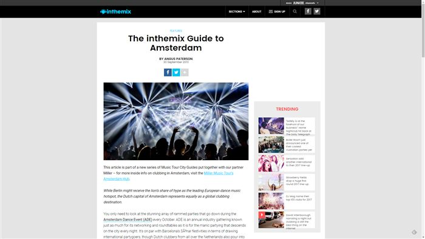
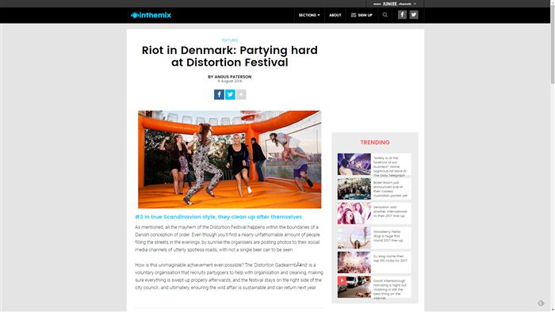
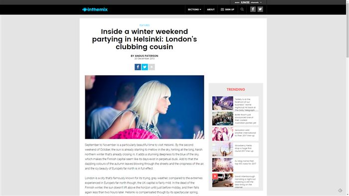
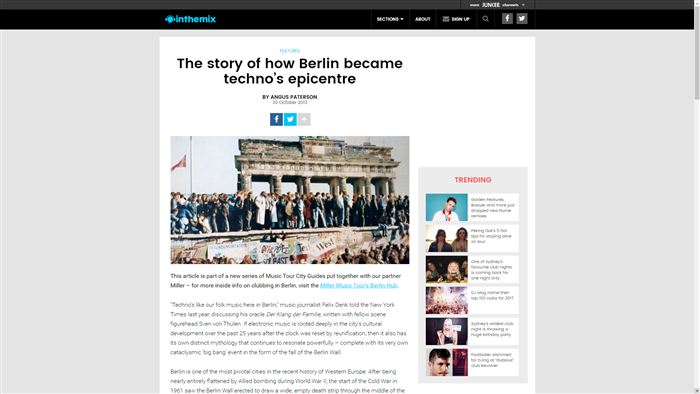
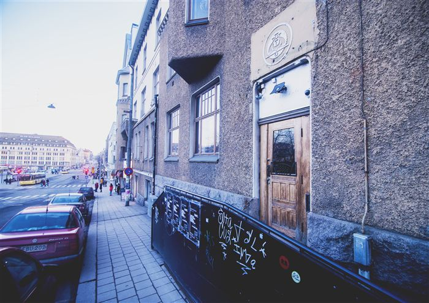
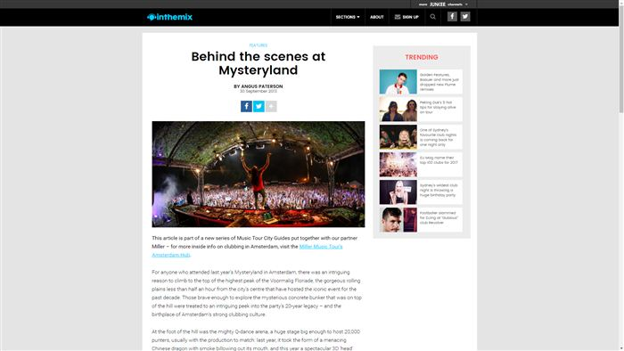
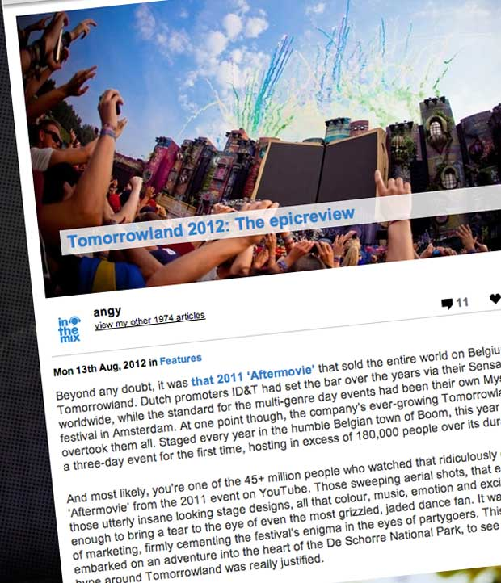
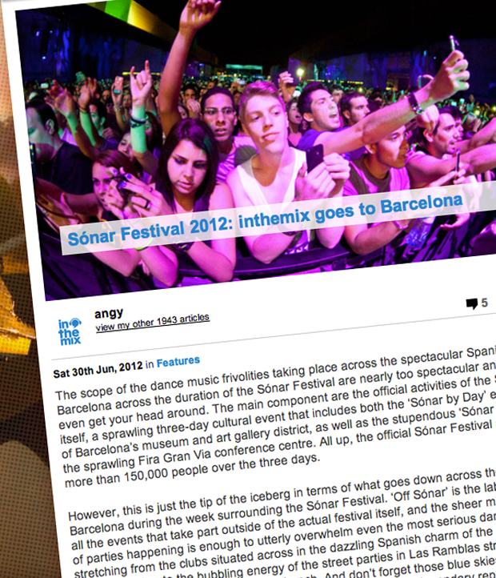
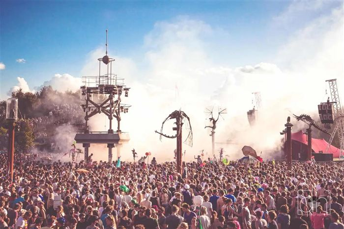
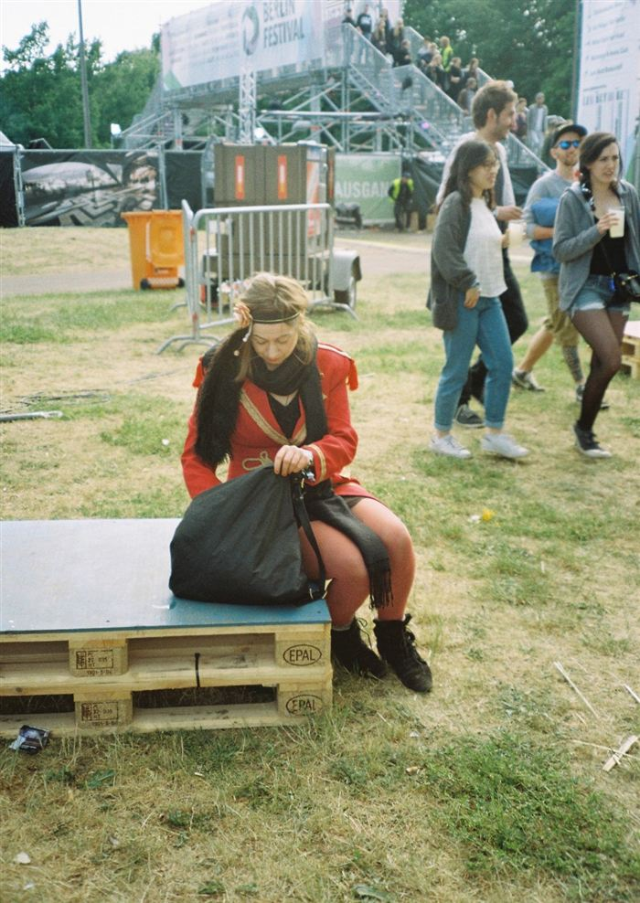

Events & Travel

The inthemix Guide to Amsterdam

Riot in Denmark: Partying hard at Distortion Festival

Inside a Winter Weekend Partying in Helsinki: London’s Clubbing Cousin

The Story of How Berlin Became Techno’s Epicentre

How a Little-Known Coastal City Is Putting Finland on the Techno Map

Behind the scenes at Mysteryland

One night in Mannheim: inthemix goes to Time Warp 2012
April 2012
Tomorrowland 2012: The epic review

Sónar Festival 2012: inthemix goes to Barcelona

Hard dance Mecca: inthemix goes to Defqon.1 Holland
July 2012
One night in Ibiza: Cream Amnesia
June 2011
Leftfield live at The Enmore, Sydney
March 2011
Germany's Fusion Festival: We Fought The Law, and Won
1 November 2019
Group Therapy comes home: Above & Beyond in London
April 2012
Why Berlin Atonal Will Convert You Into an Experimental Music Fanatic
18 November 2017
Mysteryland 2015: How Holland’s Oldest Dance Festival Does It Differently
2 September 2015
Review: Berlin Festival 2015
29 June 2015
20 Tracks That Ruled Awakenings Festival 2015
1 July 2015
13 Tracks That Ruled Time Warp Germany
9 April 2015
5 Moments That Blew Up Tomorrowland’s Main Stage on Saturday
26 July 2015Review: Mysteryland 2015
11 September 2015